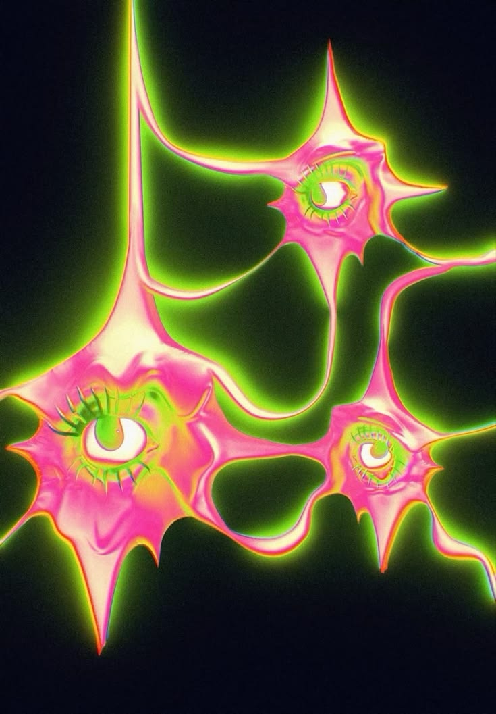
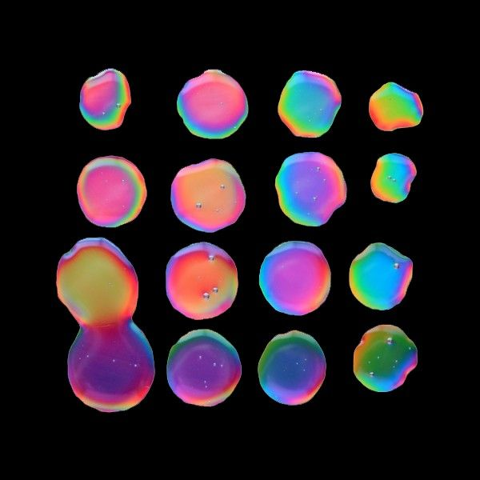
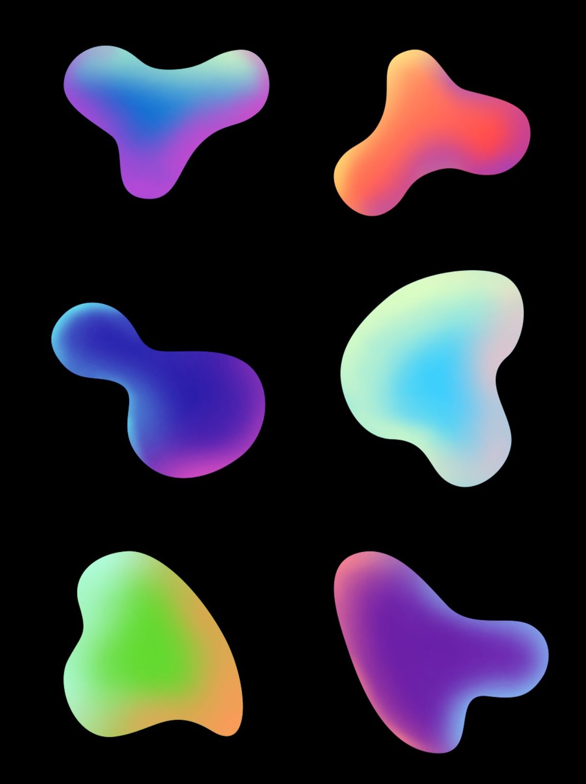

Vårat projekt
Vi har skapat digitala organismer som växer, delar sig och reagerar på användaren. Tanken är att gestalta digitala biologiska organismer, som är motsägsefulla i sin existens. Vi har visuellt inspirerats av rave temat med neonfärger och kombinerat detta med organiska former som ser levande ut.
Placeholder bilder från vår moodboard/annan inspiration


